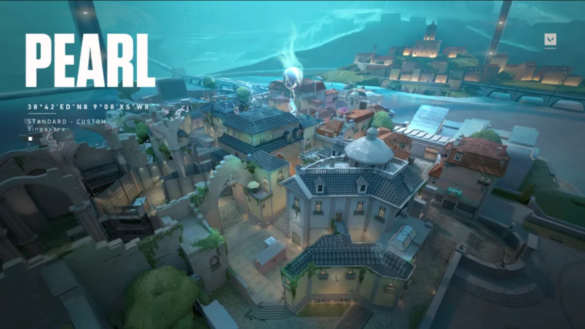

Bind es un mapa ambientado en una ciudad arabe. Lo mas interesante es que es el unico que posee dos portales de teletrasporte unidireccional con los que movernos rapidamente entre ubicaciones.
- si sos atacante, cuidado con apresurarte hacia la zona ventana de B y Juca suele ser un hervidero de balas.
- Los pasillos de Lampara A pueden ser un buen lugar para esconderse.
- Usar los teletransportes suele ser una buena distraccion al colocar la bomba.
Ascent es un mapa ambientado en Italia e inspirado en Venecia. Aunque en este caso se trata de una ciudad flotante con canales muy interesante, algunas paredes destructibles y puertas que se pueden abrir y cerrar.
- Las calles son estrechas, asi que es importante que cada miembro del equipo ocupe un lugar y una posicion determinante.
- Raze, Cypher y Jett son agentes que dan muy buenos resultados en este mapa.
- No hay que olvidarse de cubrir medio, ya que si lo descuidamos puede jugarnos en contra.
Un centro de investigación dividido por un experimento fallido de radianita. Con
opciones de
defensa tan divididas como el mismo mapa, enfrenta a los atacantes en su
propio
territorio o cerrar las escotillas y resistir.
- Es de gran ayuda utilizar las cuerdas para ir de un lado al otro y asi ahorrar tiempo.
- Al ser un mapa grande es muy bueno para lurkear.
- Al tener solo dos sites es importante que te resguardes con la defensa.

Bajo un monasterio, emerge un clamor entre los agentes que se enfrentan para
controlar
tres sitios. Hay más territorio por controlar, pero los defensores pueden usar el terreno adicional
para
realizar ataques agresivos.
- Corto A es un excelente sitio para realizar emboscadas.
- Largo a y Largo c son buenos lugares para defender con francotirador.
- Sage, Phoenix y Breach son agentes que dan buenos resultados en este mapa.

Este campo de batalla es un sitio de excavación secreto de Kingdom en algún lugar del ártico.
Los
dos sitios para plantar están protegidos tanto por nieve y metal, y no es fácil acceder a
ellos
de forma horizontal. Aprovecha las tirolezas.
- En la Zona A hay un monton de lugares para atacar y defender debes prestar mucha atencion.
- El Area central del mapa es un buen lugar para que los atacantes avancen.
- Jett, Omen y Raze son agentes que dan buenos resultados en este mapa.

Los atacantes avanzan hacia los defensores en este mapa, ambientado en una ciudad
submarina. Pearl es un mapa enfocado en el entorno, sin mecánicas. Lleva la batalla hacia un Medio
compacto o a zonas más extendidas.
- Los sitios de la SPIKE son bastantes extensos asegurate de estar listo para atacar.
- Al ser un mapa grande es muy bueno para lurkear
- Sova y Fade son agentes que dan buenos resultados en este mapa.

Un terreno abierto para las batallas por posicionamiento y de desgaste divide Ascent en dos sitios, ambos sitios se pueden fortificar con puertas que aun asi son destructibles.
- Main A y Main B son puntos de entrada cruciales para los atacantes.
- Vigas B y Back B ofrecen buenas posiciones para colocarse en defensa.
- Sova, Brimstone y Viper son agentes que dan buenos resultados en este mapa.

Una misteriosa estructura resguarda un conducto astral irradia poder ancestral. Inmensas y monolíticas puertas brindan una variedad de oportunidades de movimiento.
- Lotus es un mapa que posee puertas giratorias .
- Este mapa es un sueño para los franqueadores.
- Sova, Jett y Killjoy son agentes que dan buenos resultados en este mapa.